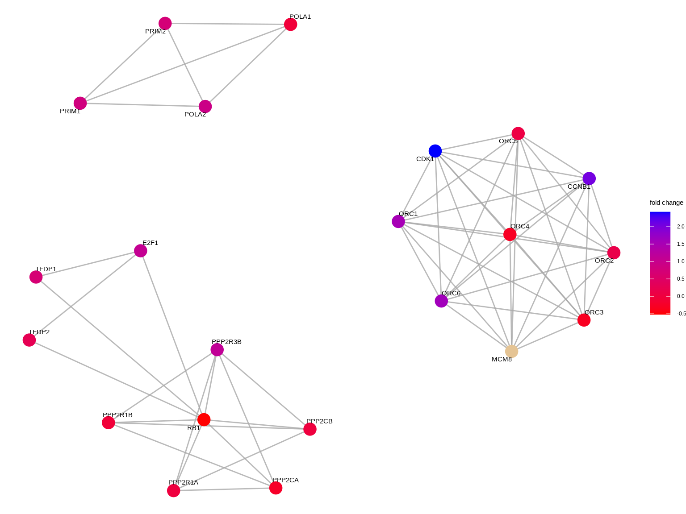

Chapter 8 Reactome enrichment analysis
ReactomePA is designed for reactome pathway based analysis (Yu and He 2016). Reactome is an open-source, open access, manually curated and peer-reviewed pathway database.
8.1 Supported organisms
Currently ReactomePA supports several model organisms, including ‘celegans’, ‘fly’, ‘human’, ‘mouse’, ‘rat’, ‘yeast’ and ‘zebrafish’. The input gene ID should be Entrez gene ID. We recommend using clusterProfiler::bitr() to convert biological IDs.
8.2 Reactome pathway over-representation analysis
Enrichment analysis is a widely used approach to identify biological
themes. ReactomePA implemented enrichPathway() that uses hypergeometric model to assess whether the number of selected genes associated with a reactome pathway is larger than expected.
library(ReactomePA)
data(geneList)
de <- names(geneList)[abs(geneList) > 1.5]
head(de)## [1] "4312" "8318" "10874" "55143" "55388" "991"x <- enrichPathway(gene=de, pvalueCutoff = 0.05, readable=TRUE)
head(x)## ID
## R-HSA-69620 R-HSA-69620
## R-HSA-2500257 R-HSA-2500257
## R-HSA-141424 R-HSA-141424
## R-HSA-141444 R-HSA-141444
## R-HSA-69618 R-HSA-69618
## R-HSA-68877 R-HSA-68877
## Description
## R-HSA-69620 Cell Cycle Checkpoints
## R-HSA-2500257 Resolution of Sister Chromatid Cohesion
## R-HSA-141424 Amplification of signal from the kinetochores
## R-HSA-141444 Amplification of signal from unattached kinetochores via a MAD2 inhibitory signal
## R-HSA-69618 Mitotic Spindle Checkpoint
## R-HSA-68877 Mitotic Prometaphase
## GeneRatio BgRatio pvalue p.adjust qvalue
## R-HSA-69620 37/322 293/10654 9.962958e-14 7.173330e-11 6.355319e-11
## R-HSA-2500257 23/322 126/10654 2.824834e-12 1.016940e-09 9.009735e-10
## R-HSA-141424 20/322 96/10654 6.054136e-12 1.089744e-09 9.654753e-10
## R-HSA-141444 20/322 96/10654 6.054136e-12 1.089744e-09 9.654753e-10
## R-HSA-69618 21/322 112/10654 1.508315e-11 2.171973e-09 1.924292e-09
## R-HSA-68877 26/322 200/10654 2.966075e-10 3.559290e-08 3.153406e-08
## geneID
## R-HSA-69620 CDC45/CDCA8/MCM10/CDC20/CENPE/CCNB2/NDC80/UBE2C/SKA1/CENPM/CENPN/CCNA2/CDK1/ERCC6L/MAD2L1/KIF18A/BIRC5/AURKB/CHEK1/CCNB1/MCM5/MCM2/KIF2C/CDC25A/CDC6/PLK1/BUB1B/GTSE1/EXO1/ZWINT/CENPU/SPC25/CENPI/CCNE1/ORC6/ORC1/TAOK1
## R-HSA-2500257 CDCA8/CDC20/CENPE/CCNB2/NDC80/SKA1/CENPM/CENPN/CDK1/ERCC6L/MAD2L1/KIF18A/BIRC5/AURKB/CCNB1/KIF2C/PLK1/BUB1B/ZWINT/CENPU/SPC25/CENPI/TAOK1
## R-HSA-141424 CDCA8/CDC20/CENPE/NDC80/SKA1/CENPM/CENPN/ERCC6L/MAD2L1/KIF18A/BIRC5/AURKB/KIF2C/PLK1/BUB1B/ZWINT/CENPU/SPC25/CENPI/TAOK1
## R-HSA-141444 CDCA8/CDC20/CENPE/NDC80/SKA1/CENPM/CENPN/ERCC6L/MAD2L1/KIF18A/BIRC5/AURKB/KIF2C/PLK1/BUB1B/ZWINT/CENPU/SPC25/CENPI/TAOK1
## R-HSA-69618 CDCA8/CDC20/CENPE/NDC80/UBE2C/SKA1/CENPM/CENPN/ERCC6L/MAD2L1/KIF18A/BIRC5/AURKB/KIF2C/PLK1/BUB1B/ZWINT/CENPU/SPC25/CENPI/TAOK1
## R-HSA-68877 CDCA8/CDC20/CENPE/CCNB2/NDC80/NCAPH/SKA1/NEK2/CENPM/CENPN/CDK1/ERCC6L/MAD2L1/KIF18A/BIRC5/NCAPG/AURKB/CCNB1/KIF2C/PLK1/BUB1B/ZWINT/CENPU/SPC25/CENPI/TAOK1
## Count
## R-HSA-69620 37
## R-HSA-2500257 23
## R-HSA-141424 20
## R-HSA-141444 20
## R-HSA-69618 21
## R-HSA-68877 268.3 Reactome pathway gene set enrichment analysis
y <- gsePathway(geneList, nPerm=10000,
pvalueCutoff=0.2,
pAdjustMethod="BH", verbose=FALSE)
head(y)## ID
## R-HSA-1474244 R-HSA-1474244
## R-HSA-216083 R-HSA-216083
## R-HSA-3000178 R-HSA-3000178
## R-HSA-1650814 R-HSA-1650814
## R-HSA-3000171 R-HSA-3000171
## R-HSA-2022090 R-HSA-2022090
## Description
## R-HSA-1474244 Extracellular matrix organization
## R-HSA-216083 Integrin cell surface interactions
## R-HSA-3000178 ECM proteoglycans
## R-HSA-1650814 Collagen biosynthesis and modifying enzymes
## R-HSA-3000171 Non-integrin membrane-ECM interactions
## R-HSA-2022090 Assembly of collagen fibrils and other multimeric structures
## setSize enrichmentScore NES pvalue p.adjust
## R-HSA-1474244 266 -0.4576106 -1.936754 0.0001332268 0.003176563
## R-HSA-216083 80 -0.5123103 -1.860721 0.0001546790 0.003176563
## R-HSA-3000178 74 -0.6262504 -2.247901 0.0001555210 0.003176563
## R-HSA-1650814 53 -0.5915513 -2.000152 0.0001596934 0.003176563
## R-HSA-3000171 56 -0.5863352 -2.000599 0.0001598210 0.003176563
## R-HSA-2022090 54 -0.5600621 -1.898797 0.0001598977 0.003176563
## qvalues rank leading_edge
## R-HSA-1474244 0.002306638 1943 tags=33%, list=16%, signal=29%
## R-HSA-216083 0.002306638 1890 tags=39%, list=15%, signal=33%
## R-HSA-3000178 0.002306638 1890 tags=46%, list=15%, signal=39%
## R-HSA-1650814 0.002306638 1890 tags=47%, list=15%, signal=40%
## R-HSA-3000171 0.002306638 2538 tags=45%, list=20%, signal=36%
## R-HSA-2022090 0.002306638 1897 tags=54%, list=15%, signal=46%
## core_enrichment
## R-HSA-1474244 825/8038/11132/4017/1288/4811/3910/3371/1291/3791/831/1301/4238/7450/3685/80781/1280/1306/4314/3675/8425/977/4054/7837/7042/3912/4322/1278/1511/4060/30008/1277/164656/22795/10516/81578/1293/2247/1295/58494/8076/5118/2192/1281/83700/50509/4319/1290/1513/11096/2202/4313/2199/3693/10536/1294/11117/3339/1462/1289/1292/3908/4016/3909/4053/6678/1296/633/5654/2331/63923/7043/3913/1300/2200/1634/7177/1287/3679/4680/2006/7373/1307/1311/1308/652/4148/54829/4239
## R-HSA-216083 1288/3371/1291/3791/7450/3685/80781/1280/3675/1278/4060/1277/1293/1295/58494/1281/83700/50509/1290/3693/1294/3339/1289/1292/1296/1300/2200/1287/3679/1307/1311
## R-HSA-3000178 1288/3910/3371/1291/3685/1280/7042/3912/1278/4060/1277/1293/1281/50509/1290/3693/3339/1462/1289/1292/3908/3909/6678/633/2331/63923/7043/3913/1634/1287/3679/1311/4148/54829
## R-HSA-1650814 1288/1291/1301/80781/1280/1306/1278/1277/81578/1293/1295/5118/1281/50509/1290/10536/1294/1289/1292/1296/1300/1287/7373/1307/1308
## R-HSA-3000171 7057/3915/6385/4921/1288/3910/3371/1301/3685/1280/3912/1278/1277/2247/1281/50509/1290/3693/3339/1289/3908/3909/3913/1300/1287
## R-HSA-2022090 4017/1288/1291/1301/80781/1280/1306/4314/977/7837/4322/1278/1277/1293/1295/5118/1281/50509/1290/1294/1289/1292/4016/3909/1296/1300/1287/7373/13088.4 Pathway Visualization
ReactomePA implemented the viewPathway() to visualized selected reactome pathway. More general purpose of visualization methods for ORA and GSEA results are provided in the enrichplot package and are documented on Chapter 14.
viewPathway("E2F mediated regulation of DNA replication",
readable = TRUE,
foldChange = geneList)
References
Yu, Guangchuang, and Qing-Yu He. 2016. “ReactomePA: An R/Bioconductor Package for Reactome Pathway Analysis and Visualization.” Molecular BioSystems 12 (2): 477–79. https://doi.org/10.1039/C5MB00663E.